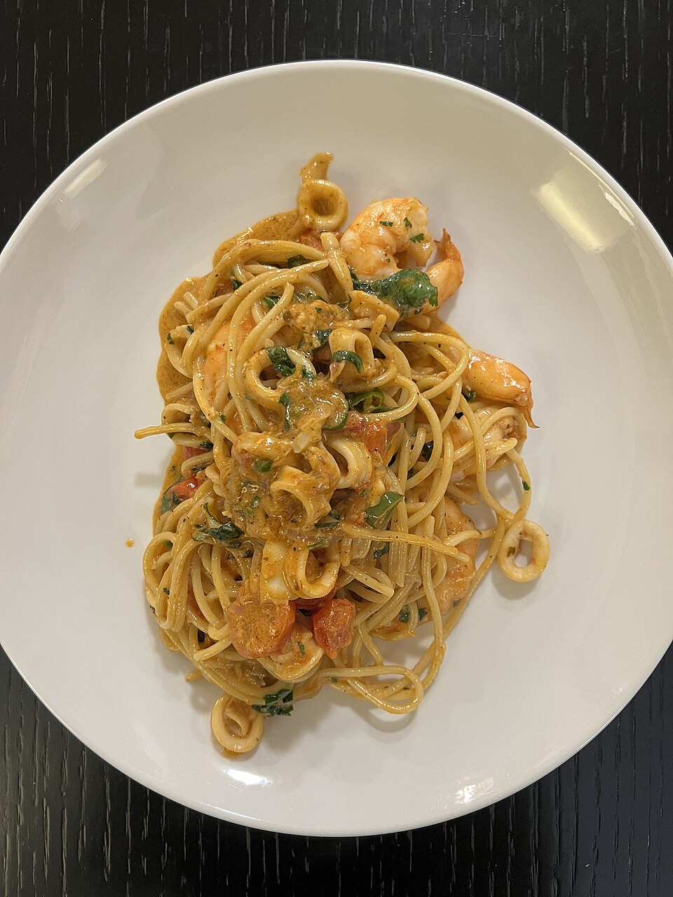
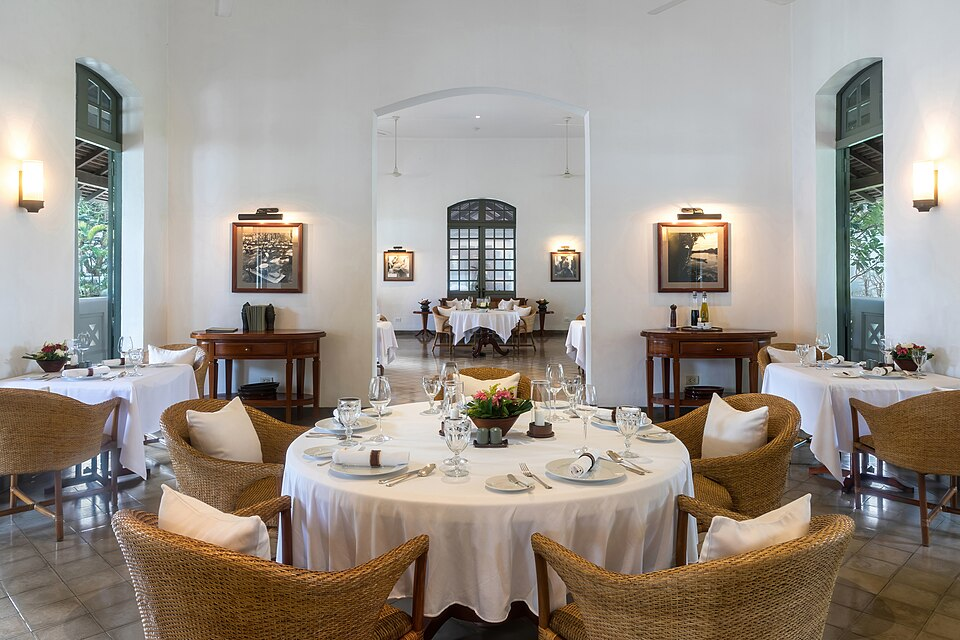
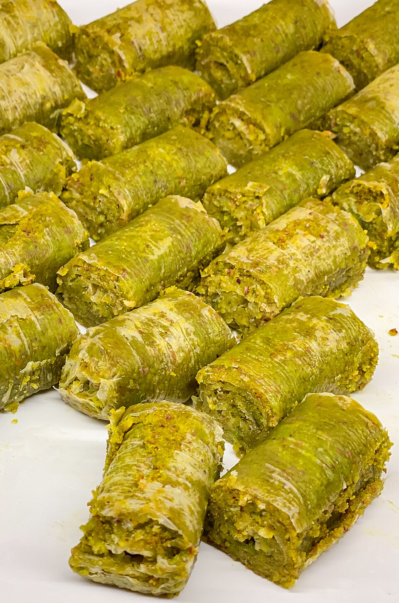

Seafood Pasta
Linguine with shrimp, mussels and calamari in a light tomato and garlic sauce. See the full list on our menu page.
Mediterranean Kitchen & Bistro

We serve fresh, homemade Mediterranean food prepared with local ingredients, extra virgin olive oil and herbs from our own garden. Whether you come for a quick lunch or a long dinner with friends, we will make you feel at home.

Linguine with shrimp, mussels and calamari in a light tomato and garlic sauce. See the full list on our menu page.

Crispy layers of filo pastry filled with pistachios and sweetened with honey syrup.